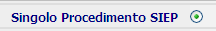
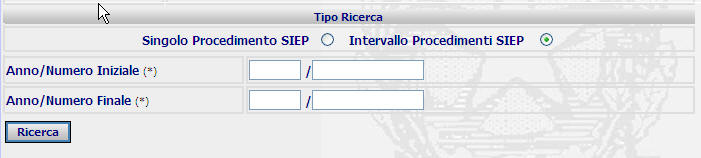

RICERCA TITOLO ESECUTIVO NUMERO SIEP: La funzione consente di operare la ricerca del titolo esecutivo presso le procure Generali o presso il Tribunale attraverso alcuni canali di ricerca indicati nella relativa maschera.
LE MASCHERE VIDEO
La funzione RICERCA TITOLO ESECUTIVO viene realizzata attraverso la maschera seguente in cui sono presenti due sezioni :
| Estremi titolo esecutivo in cui l'utente ha la possibilità di inserire il tipo di ufficio e la sede della l'ufficio di appartenenza del procedimento che si vuole ricercare |
| Tipo Ricerca in cui posso selezionare la duplice modalità di inserimento dati: singolo Procedimento SIEP e Intervallo Procedimenti SIEP; |

COME FARE PER ...
| Per effettuare la Ricerca del titolo esecutivo per singolo Procedimento SIEP l'utente deve: |
- inserire il “tipo ufficio” selezionando attraverso la tendina.
- inserire la sede della Procura selezionando attraverso la lista predefinita
.
selezionare la voce

Introdurre l'anno/numero SIUS
Opzionalmente, se l'utente non è a conoscenza del numero del procedimento SIEP, ma di quello RES o della PRETURA, c'è la possibilità di trovare l'equivalente numero del fascicolo SIES attraverso i link:
che attraverso la maschera del seguente tipo, permette all'utente di convertire i numeri dei fascicoli R.E.S. e P.T. in numeri SIES:
Confermare i dati inseriti nella maschera agendo sul bottone
. Se il procedimento esiste, allora viene visualizzata la maschera di dettaglio procedimento SIEP:
|
Per ricercare, attraverso il Tipo di Ricerca per Intervallo Procedimenti SIEP , i procedimenti compresi in un determinato intervallo numerico è necessario: |
- inserire il “tipo ufficio” selezionando attraverso la tendina.
- inserire la sede della Procura selezionando attraverso la lista predefinita
Selezionare la voce
;
Inserire nella sezione seguente l'anno/numero iniziale e finale dei procedimenti che si ha necessità di ricercare;

Confermare i dati inseriti nella maschera agendo sul bottone
CAMPI
I dati che consentono di ricercare un procedimento nel tipo di ricerca per Singolo Procedimento SIEP sono i seguenti:
| NOME | DESCRIZIONE |
| Tipo Ufficio | Campo nel quale va inserito il tipo di Procura nel quale la ricerca va effettuata. |
| Sede Procura | Campo nel quale va inserito la sede dell'ufficio nel quale la ricerca va effettuata. |
| Anno/numero | Campo nel quale va inserita l'indicazione dell'anno/numero del procedimento da ricercare. |
I dati che consentono di ricercare un procedimento nel tipo di ricerca per Intervallo Procedimenti SIEP:
| NOME | DESCRIZIONE |
| Tipo Ufficio | Campo nel quale va inserito il tipo di Procura nel quale la ricerca va effettuata. |
| Sede Procura | Campo nel quale va inserito la sede dell'ufficio nel quale la ricerca va effettuata. |
| Anno/numero iniziale | Campo nel quale va inserita l'indicazione dell'anno/numero iniziale del procedimento da ricercare. |
| Anno/numero finale | Campo nel quale va inserita l'indicazione dell'anno/numero finale del procedimento da ricercare. |
PULSANTI
Oltre al pulsante
 di stampa del contesto (videata)
di stampa del contesto (videata)
|
PULSANTE |
DESCRIZIONE |
|
|
A fronte di tale comando, il sistema visualizza la lista predefinita. |
BOTTONI
Oltre ai comandi funzionali relativi al menù verticale sono presenti i seguenti comandi:
|
COMANDI |
DESCRIZIONE |
|
|
A fronte di tale comando, il sistema dopo aver verificato la validità dei dati specificati, presenta la maschera di dettaglio del singolo procedimento ovvero, nel caso in cui più procedimenti rispondano ai criteri di ricerca impostati, presenta la lista dei procedimenti trovati; |
CONTROLLI
A fronte della pressione
del bottone
 , il
sistema verifica che il procedimento esista
(ovvero che esista uno o più procedimenti nel caso di ricerca su intervallo
di procedimenti);
se il sistema non troverà alcun procedimento
rispondente ai criteri di ricerca impostati verrà visualizzato il seguente
messaggio:
, il
sistema verifica che il procedimento esista
(ovvero che esista uno o più procedimenti nel caso di ricerca su intervallo
di procedimenti);
se il sistema non troverà alcun procedimento
rispondente ai criteri di ricerca impostati verrà visualizzato il seguente
messaggio: